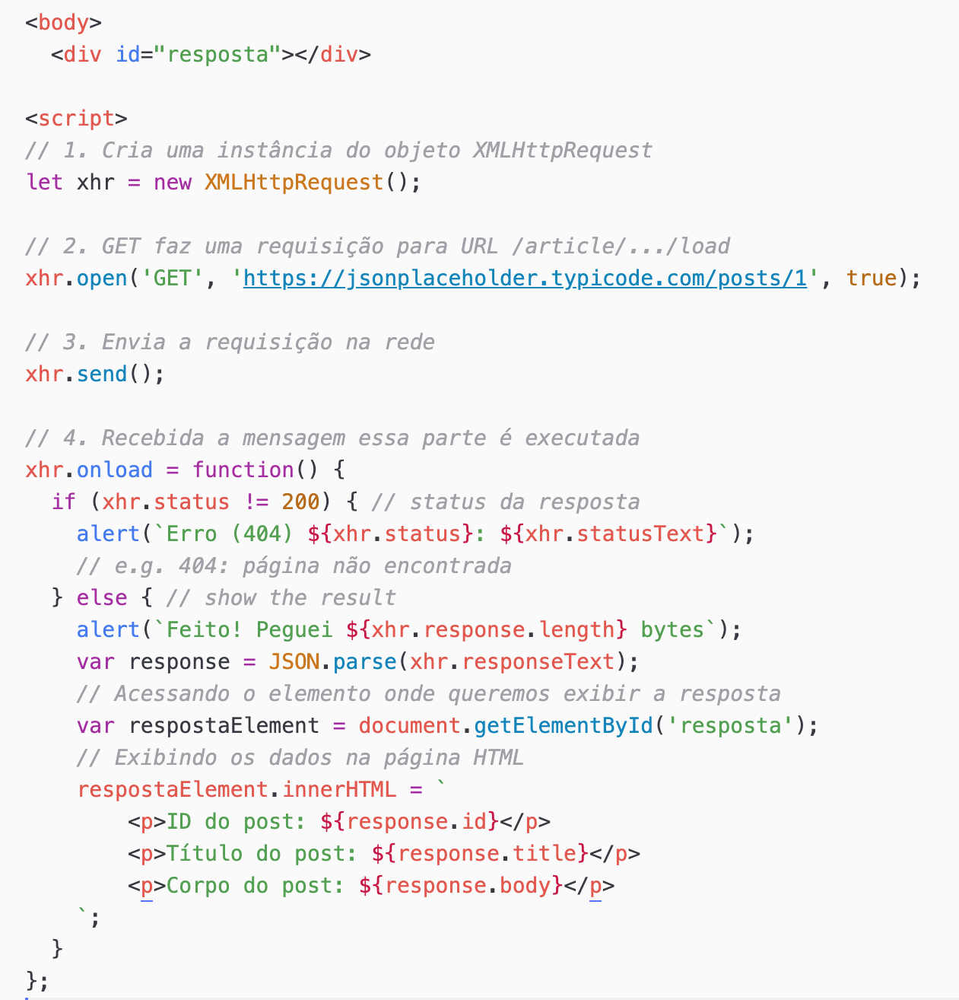
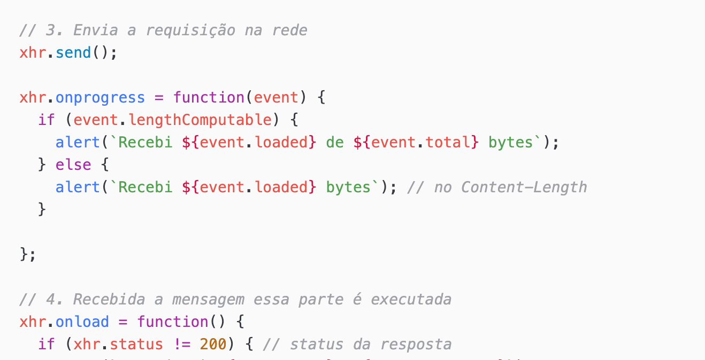

No contexto de JavaScript, uma API (Interface de Programação de Aplicações, em português) se refere a um conjunto de regras e padrões que permitem que diferentes softwares se comuniquem entre si. Em outras palavras, uma API define como componentes de software devem interagir uns com os outros.
Existem vários tipos de APIs no contexto de JavaScript:
Em resumo, no contexto de JavaScript, uma API é uma interface que define como você pode interagir com diferentes partes de um sistema, seja com o navegador, serviços externos ou bibliotecas/frameworks JavaScript. Essas APIs fornecem métodos e funcionalidades que podem ser utilizados pelos desenvolvedores para criar aplicações web dinâmicas e interativas.
No contexto de JavaScript, as APIs REST, RESTful e SOAP referem-se a diferentes estilos de arquitetura para a construção de serviços web que permitem a comunicação entre sistemas distribuídos na web. Vamos entender cada uma delas:
Em resumo, as APIs REST e RESTful seguem os princípios do estilo arquitetural REST e são baseadas no protocolo HTTP, enquanto as APIs SOAP são baseadas no protocolo SOAP e utilizam mensagens XML. Cada uma dessas abordagens tem suas próprias vantagens e é adequada para diferentes cenários de desenvolvimento de software. No contexto de JavaScript, as APIs REST e RESTful são mais comuns devido à sua simplicidade, escalabilidade e interoperabilidade.
Enquanto uma API REST pode seguir apenas parcialmente os princípios do REST, uma API RESTful segue rigorosamente todos os princípios de design REST. Em resumo, a principal diferença entre API REST e RESTful é o nível de aderência aos princípios do estilo arquitetural REST. Uma API RESTful é uma implementação mais pura e completa do REST.
A Google Maps API permite integrar mapas interativos e funcionalidades de localização em aplicações web.
A Twitter API permite acessar os dados e funcionalidades da plataforma de mídia social Twitter, como postagens, perfis de usuários, tendências e busca.
Esses são apenas alguns exemplos de como as APIs em JavaScript podem ser utilizadas para integrar funcionalidades poderosas em aplicações web, desde mapas interativos até integração com redes sociais e análise de dados. As possibilidades são vastas e dependem da criatividade e das necessidades específicas de cada projeto.
O XMLHttpRequest foi introduzido inicialmente pela Microsoft em 1999 como parte do Internet Explorer 5.0 e posteriormente adotado por outros navegadores. Desde então, tornou-se uma ferramenta essencial para o desenvolvimento de aplicações web interativas e dinâmicas.
Funcionalidades Principais:
O XMLHttpRequest permite fazer requisições HTTP assíncronas, o que significa que o navegador pode continuar executando outras tarefas enquanto aguarda a resposta do servidor. Isso evita bloqueios na interface do usuário e melhora a experiência do usuário final;
Com o XHR (XMLHttpRequest), é possível enviar solicitações para o servidor web e receber respostas sem a necessidade de recarregar a página. Isso possibilita a criação de aplicações web dinâmicas que podem interagir com servidores remotos de forma eficiente;
O XHR é comumente usado para atualizar partes específicas de uma página web com novos dados do servidor, sem recarregar a página inteira. Isso permite criar interfaces de usuário dinâmicas e responsivas.
O XHR suporta diferentes tipos de dados, como texto, XML e JSON. Isso permite que os desenvolvedores escolham o formato mais adequado para os dados que estão sendo transmitidos entre o cliente e o servidor;
O XHR fornece uma série de eventos que podem ser usados para monitorar o progresso da requisição, como onload (quando a resposta é recebida com sucesso), onerror (quando ocorre um erro durante a requisição) e onprogress (para acompanhar o progresso do envio ou recebimento de dados).
Na imagem abaixo vemos um primeiro exemplo do uso do XMLHttpRequest.
Criamos uma nova instância do objeto XMLHttpRequest.
Configuramos a requisição GET para o endpoint
https://jsonplaceholder.typicode.com/posts/1, que retorna
informações de um post fictício.
Definimos a função de callback onload, que é chamada quando
a resposta é recebida com sucesso. Verificamos se o código de status da
resposta está dentro da faixa de sucesso (200-299), então convertemos a
resposta JSON para um objeto JavaScript e exibimos os dados na console.
Também definimos a função de callback onerror, que é chamada
em caso de erro na requisição.
Enviamos a requisição usando o método send().
Quando um navegador requisita um serviço de um servidor web, um erro pode ocorrer, como o erro “404 Not Found”. Veja as principais mensagens de erro em W3Schools.com!.
Lembrando que este script acima deve estar envolto num códido HTML,
dentro dos rótulos body,
como exemplificado na imagem a seguir:
Veja o código fonte aqui.
O código em execução encontra-se aqui
No exemplo abaixo acrescentamos uma visualização do texto recuperado na requisição do serviço.
Neste exemplo, o JavaScript pega o elemento com o id resposta
usando document.getElementById('resposta'), e então define o
innerHTML desse elemento com os dados da resposta da requisição.
Os dados são inseridos como parágrafos, utilizando a interpolação de string
(${...}) para exibir os valores das propriedades do objeto
JSON retornado pela API.
Ah! Na imagem acima a função xhr.onerror = function()
ficou de fora, mas deve sempre permanecer no código.
Vejamos agora uma última melhoria no código. Vamos declarar e definir uma função que acompanha o progresso da requisição.
Perceba que esta função pode ser inserida depois da função
xhr.send().
Codifique e testem o código acima. Se tiverem dificuldades veja o código fonte aqui.
O código em execução encontra-se aqui
A recuperação de dados vista no código a seguir utiliza uma abordagem mais moderna, a API Fetch, que é mais simples e legível.
Neste exemplo:
fetch() para fazer uma requisição GET para a URL
https://jsonplaceholder.typicode.com/posts, que retorna uma
lista de posts no formato JSON; .then() e .catch() para processar a resposta da
requisição e tratar erros, respectivamente;response.json() e exibimos os títulos dos posts em uma lista
não ordenada na página.Este é apenas um exemplo básico de como obter dados de uma API pública usando JavaScript.
Veja o código fonte aqui.
O código em execução encontra-se aqui
Existem várias APIs públicas cujos serviços podem ser usados. Algumas, no entanto, como as API do Google, exigem credenciais para seus serviços.
Existem várias APIs públicas cujos serviços podem ser usados. Algumas, no entanto, como as API do Google, exigem credenciais para seus serviços.
A seguir fornecemos um exemplo de uma API livre que fornece conselhos pessoais, a Advice Slip Json API. Veja o site Advice Slip.
Implementamos esse serviço.
Veja o código fonte aqui.
O código em execução encontra-se aqui
Desenvolver uma pequena aplicação web que utilize uma API externa. Implementar funcionalidades básicas, como pesquisa, filtragem ou exibição de resultados.